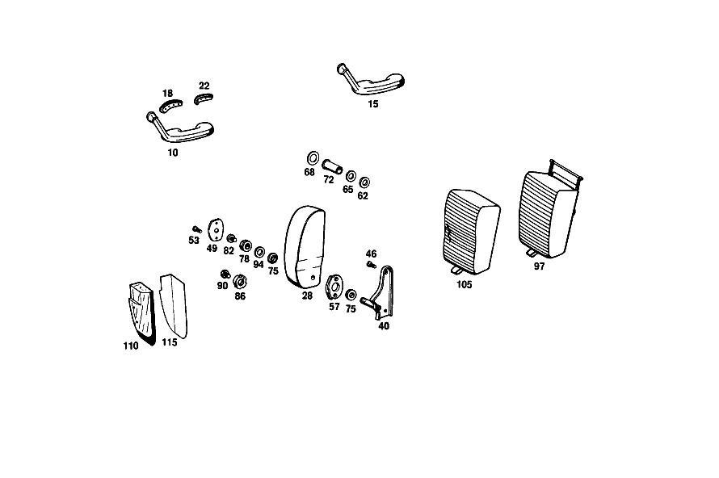

| № | Артикул | Название | Кол. | Примечание | Ограничение |
|---|---|---|---|---|---|
| 10 | A 108 970 22 01 | ПОДЛОКОТНИК | 1 | RIGHT FRONT DOOR [003] STATE COLOR AND CHASSIS NO. WHEN ORDERING [005] 015 FROM CHASSIS 002120 | |
| 15 | A 108 970 22 01 | ПОДЛОКОТНИК | 1 | RIGHT REAR DOOR [003] STATE COLOR AND CHASSIS NO. WHEN ORDERING | |
| 18 | A 108 971 06 43 | НАКЛАДКА | 2 | RIGHT ARMRESTS TO FRONT AND REAR DOORS | |
| 22 | A 108 971 08 43 | НАКЛАДКА | 2 | RIGHT ARMRESTS TO FRONT AND REAR DOORS | |
| 46 | N 007988 006169 | БОЛТ | 4 | [402] БОЛЬШЕ НЕ ПОСТАВЛЯЕТСЯ [013] 018 FROM CHASSIS 002222 [002] 015 FROM CHASSIS 002131 [031] 018 UP TO CHASSIS 005820; 056 UP TO CHASSIS 006737 | |
| 57 | A 109 973 00 26 | УПОР | 2 | [029] 018 UP TO CHASSIS 004324; 056 UP TO CHASSIS 001919 | |
| 62 | A 109 990 00 40 | ШАЙБА | - | ||
| 62 | A 116 984 01 56 | Диск | 2 | [030] 018 FROM CHASSIS 004325; 056 FROM CHASSIS 001920 | |
| 65 | A 109 990 01 40 | Диск | 4 | [030] 018 FROM CHASSIS 004325; 056 FROM CHASSIS 001920 | |
| 68 | A 109 987 00 41 | Диск | 2 | [030] 018 FROM CHASSIS 004325; 056 FROM CHASSIS 001920 | |
| 72 | A 109 973 00 37 | ПРОСТАВКА | - | ||
| 72 | A 107 973 02 37 | Проставочная труба | 2 | [030] 018 FROM CHASSIS 004325; 056 FROM CHASSIS 001920 | |
| 75 | A 108 973 00 29 | НАПРАВЛЯЮЩАЯ | 4 | [029] 018 UP TO CHASSIS 004324; 056 UP TO CHASSIS 001919 | |
| 86 | A 109 990 01 60 | гайка | 2 | [018] 016 FROM CHASSIS 000814 | |
| 105 | A 109 970 00 47 | ОБИВКА | 1 | [003] STATE COLOR AND CHASSIS NO. WHEN ORDERING [402] БОЛЬШЕ НЕ ПОСТАВЛЯЕТСЯ [023] 018 UP TO CHASSIS 004920 EXCEPT FOR, 004913, 004914; 056 UP TO CHASSIS 002604 EXCEPT FOR, SEE FOOTNOTE 20 [020] 015 UP TO CHASSIS 002119 | |
| 115 | A 000 983 08 87 | НАПОЛЬНОЕ ПОКРЫТИЕ | 1 | 200 X 300 MM Рулевое управление: Вправо [003] STATE COLOR AND CHASSIS NO. WHEN ORDERING [402] БОЛЬШЕ НЕ ПОСТАВЛЯЕТСЯ [404] ЗАКАЗЫВАТЬ ПОГОННЫМИ МЕТРАМИ | |
| A 108 970 21 01 | Подлокотник | - | |||
| A 108 970 22 01 | ПОДЛОКОТНИК | 1 | LEFT FRONT DOOR [003] STATE COLOR AND CHASSIS NO. WHEN ORDERING [005] 015 FROM CHASSIS 002120 | ||
| A 108 970 21 01 | Подлокотник | - | |||
| A 108 970 22 01 | ПОДЛОКОТНИК | 1 | LEFT REAR DOOR [003] STATE COLOR AND CHASSIS NO. WHEN ORDERING | ||
| A 108 971 05 43 | НАКЛАДКА | 2 | LEFT ARMRESTS TO FRONT AND REAR DOORS | ||
| A 108 971 07 43 | НАКЛАДКА | 2 | LEFT ARMRESTS TO FRONT AND REAR DOORS | ||
| N 007985 006132 | Винт | 8 | ARMREST ON FRONT AND REAR DOORS [402] БОЛЬШЕ НЕ ПОСТАВЛЯЕТСЯ | ||
| A 000 990 41 91 | ГАЙКОДЕРЖАТЕЛЬ | - | |||
| A 000 990 83 91 | ГАЙКОДЕРЖАТЕЛЬ | - | |||
| A 000 990 71 91 | Гайкодержатель | 8 | ARMREST ON FRONT AND REAR DOORS | ||
| A 000 984 04 56 | ШАЙБА | 2 | ARMREST ON FRONT AND REAR DOORS | ||
| N 007985 006157 | Винт | - | M6X12 | ||
| N 000000 001145 | Винт с 6-гр. глвк | 4 | ARMREST ON FRONT AND REAR DOORS; M6X12 | ||
| A 094 990 68 10 | Пружинное кольцо | 4 | ARMREST ON FRONT AND REAR DOORS | ||
| A 109 970 53 30 | ПОДЛОКОТНИК ОТКИДН. | - | [028] TOGETHER WITH 001 A 1099730226 001 A 1099900040 002 A 1099900140 001 A 1099870041 001 N 040621018205 001 A 1099730037 | ||
| A 109 970 71 30 | ПОДЛОКОТНИК ОТКИДН. | - | [007] 015 FROM CHASSIS 002095 [029] 018 UP TO CHASSIS 004324; 056 UP TO CHASSIS 001919 | ||
| A 109 970 13 31 | ПОДЛОКОТНИК ОТКИДН. | 1 | СИДЕНЬЕ ВОДИТЕЛЯ СЛЕВА [003] STATE COLOR AND CHASSIS NO. WHEN ORDERING [030] 018 FROM CHASSIS 004325; 056 FROM CHASSIS 001920 | ||
| A 109 970 54 30 | ПОДЛОКОТНИК ОТКИДН. | - | [028] TOGETHER WITH 001 A 1099730226 001 A 1099900040 002 A 1099900140 001 A 1099870041 001 N 040621018205 001 A 1099730037 | ||
| A 109 970 72 30 | ПОДЛОКОТНИК ОТКИДН. | - | [007] 015 FROM CHASSIS 002095 [029] 018 UP TO CHASSIS 004324; 056 UP TO CHASSIS 001919 | ||
| A 109 970 14 31 | ПОДЛОКОТНИК ОТКИДН. | 1 | СИДЕНЬЕ ВОДИТЕЛЯ СПРАВА [003] STATE COLOR AND CHASSIS NO. WHEN ORDERING [030] 018 FROM CHASSIS 004325; 056 FROM CHASSIS 001920 | ||
| A 109 970 95 30 | ПОДЛОКОТНИК ОТКИДН. | - | [028] TOGETHER WITH 001 A 1099730226 001 A 1099900040 002 A 1099900140 001 A 1099870041 001 N 040621018205 001 A 1099730037 [029] 018 UP TO CHASSIS 004324; 056 UP TO CHASSIS 001919 [015] 016 FROM CHASSIS 001888; 018 FROM CHASSIS 002099 | ||
| A 109 970 25 31 | ПОДЛОКОТНИК ОТКИДН. | 1 | LEFT COMPLETE, BUT LESS COVER [030] 018 FROM CHASSIS 004325; 056 FROM CHASSIS 001920 | ||
| A 109 970 96 30 | ПОДЛОКОТНИК ОТКИДН. | - | [028] TOGETHER WITH 001 A 1099730226 001 A 1099900040 002 A 1099900140 001 A 1099870041 001 N 040621018205 001 A 1099730037 [029] 018 UP TO CHASSIS 004324; 056 UP TO CHASSIS 001919 [015] 016 FROM CHASSIS 001888; 018 FROM CHASSIS 002099 | ||
| A 109 970 26 31 | ПОДЛОКОТНИК ОТКИДН. | 1 | RIGHT COMPLETE,BUT LESS COVER [030] 018 FROM CHASSIS 004325; 056 FROM CHASSIS 001920 | ||
| A 109 970 13 20 | ПОДШИПНИК | - | [013] 018 FROM CHASSIS 002222 [002] 015 FROM CHASSIS 002131 [031] 018 UP TO CHASSIS 005820; 056 UP TO CHASSIS 006737 | ||
| A 109 970 37 20 | ПОДШИПНИК | 1 | СЛЕВА [032] 018 FROM CHASSIS 005821; 056 FROM CHASSIS 006738 | ||
| A 109 970 14 20 | ПОДШИПНИК | - | [013] 018 FROM CHASSIS 002222 [002] 015 FROM CHASSIS 002131 [031] 018 UP TO CHASSIS 005820; 056 UP TO CHASSIS 006737 | ||
| A 109 970 38 20 | ПОДШИПНИК | 1 | СПРАВА [032] 018 FROM CHASSIS 005821; 056 FROM CHASSIS 006738 | ||
| N 007987 006176 | БОЛТ | 4 | [032] 018 FROM CHASSIS 005821; 056 FROM CHASSIS 006738 | ||
| A 109 973 06 11 | ПЛАСТИНА | 2 | [015] 016 FROM CHASSIS 001888; 018 FROM CHASSIS 002099 [013] 018 FROM CHASSIS 002222 | ||
| A 109 973 02 26 | УПОР | - | |||
| A 109 973 03 26 | УПОР | 2 | [030] 018 FROM CHASSIS 004325; 056 FROM CHASSIS 001920 | ||
| N 007988 006157 | БОЛТ | 4 | [029] 018 UP TO CHASSIS 004324; 056 UP TO CHASSIS 001919 | ||
| N 040621 018211 | Изоляционный шланг | 2 | [030] 018 FROM CHASSIS 004325; 056 FROM CHASSIS 001920 | ||
| A 109 990 00 01 | БОЛТ | - | |||
| N 000933 005036 | Винт | 2 | [018] 016 FROM CHASSIS 000814 | ||
| A 109 970 99 30 | ПОДЛОКОТНИК ОТКИДН. | 1 | СЕРЕДИНА [003] STATE COLOR AND CHASSIS NO. WHEN ORDERING [027] 016 FROM CHASSIS 002360; 018 FROM CHASSIS 003056 [023] 018 UP TO CHASSIS 004920 EXCEPT FOR, 004913, 004914; 056 UP TO CHASSIS 002604 EXCEPT FOR, SEE FOOTNOTE 20 [020] 015 UP TO CHASSIS 002119 | ||
| A 109 970 27 31 | ПОДЛОКОТНИК ОТКИДН. | 1 | СЕРЕДИНА [003] STATE COLOR AND CHASSIS NO. WHEN ORDERING [024] 018 FROM CHASSIS 004921 ALSO INSTALLED ON 004913, 004914; 056 FROM CHASSIS 002605 ALSO INSTALLED ON, SEE FOOTNOTE 20 [020] 015 UP TO CHASSIS 002119 | ||
| A 000 987 41 72 | ЗАЩИТА КРОМОК | - | |||
| A 000 987 51 72 | ЗАЩИТА КРОМОК | 1 | 860 MM [021] 016 UP TO CHASSIS 001887 [404] ЗАКАЗЫВАТЬ ПОГОННЫМИ МЕТРАМИ [033] 018 UP TO CHASSIS 006421; 056 UP TO CHASSIS 009379 | ||
| A 109 970 69 47 | ОБИВКА | 1 | [003] STATE COLOR AND CHASSIS NO. WHEN ORDERING [402] БОЛЬШЕ НЕ ПОСТАВЛЯЕТСЯ [024] 018 FROM CHASSIS 004921 ALSO INSTALLED ON 004913, 004914; 056 FROM CHASSIS 002605 ALSO INSTALLED ON, SEE FOOTNOTE 20 [020] 015 UP TO CHASSIS 002119 [033] 018 UP TO CHASSIS 006421; 056 UP TO CHASSIS 009379 | ||
| A 109 970 71 47 | ОБИВКА | 1 | [034] 018 FROM CHASSIS 006422; 056 FROM CHASSIS 009380 | ||
| A 109 970 09 31 | ПОДЛОКОТНИК ОТКИДН. | 1 | CENTRAL, COMPLETE, BUT LESS COVER [027] 016 FROM CHASSIS 002360; 018 FROM CHASSIS 003056 [023] 018 UP TO CHASSIS 004920 EXCEPT FOR, 004913, 004914; 056 UP TO CHASSIS 002604 EXCEPT FOR, SEE FOOTNOTE 20 [020] 015 UP TO CHASSIS 002119 | ||
| A 108 970 35 31 | ПОДЛОКОТНИК ОТКИДН. | 1 | [024] 018 FROM CHASSIS 004921 ALSO INSTALLED ON 004913, 004914; 056 FROM CHASSIS 002605 ALSO INSTALLED ON, SEE FOOTNOTE 20 [020] 015 UP TO CHASSIS 002119 | ||
| A 108 970 00 70 | РАМА | 1 | Рулевое управление: Вправо [012] 016 FROM CHASSIS 001859 ALSO INSTALLED ON, SEE FOOTNOTE 26; 018 FROM CHASSIS 002020 ALSO INSTALLED ON 001907, 001911 [026] 016 UP TO CHASSIS 002359; 018 UP TO CHASSIS 003055 | ||
| N 007982 005213 | Шуруп | 2 | [010] 015 FROM CHASSIS 001643 [011] 016 UP TO CHASSIS 001858 EXCEPT FOR, SEE FOOTNOTE 26; 018 UP TO CHASSIS 002019 EXCEPT FOR 001907, 001911 [026] 016 UP TO CHASSIS 002359; 018 UP TO CHASSIS 003055 | ||
| N 007982 005212 | Шуруп | 2 | Рулевое управление: Вправо [402] БОЛЬШЕ НЕ ПОСТАВЛЯЕТСЯ [012] 016 FROM CHASSIS 001859 ALSO INSTALLED ON, SEE FOOTNOTE 26; 018 FROM CHASSIS 002020 ALSO INSTALLED ON 001907, 001911 [026] 016 UP TO CHASSIS 002359; 018 UP TO CHASSIS 003055 |
Позиций: 63 · подписано на схемах: 16 · колесо — плавный зум в курсор, перетаскивание — пан, двойной клик — зум, клик по артикулу — скопировать.